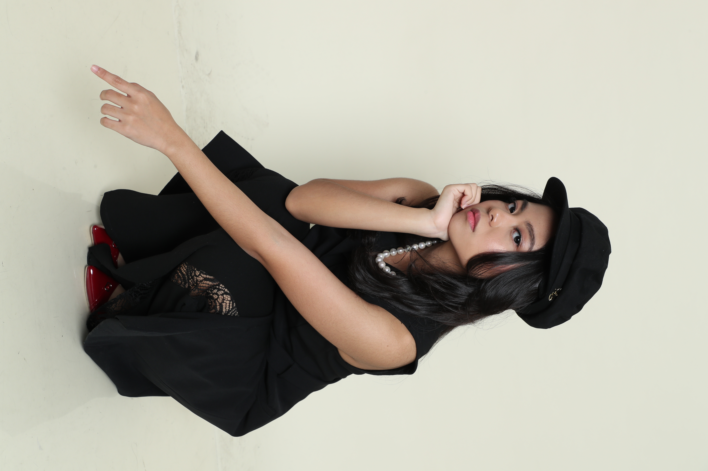
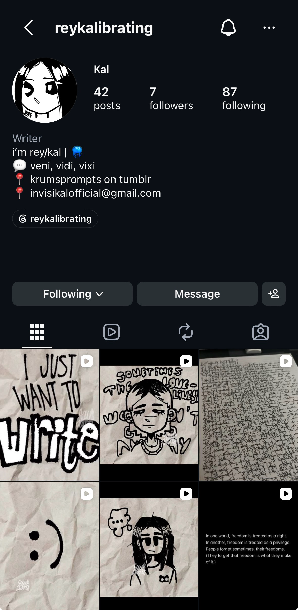
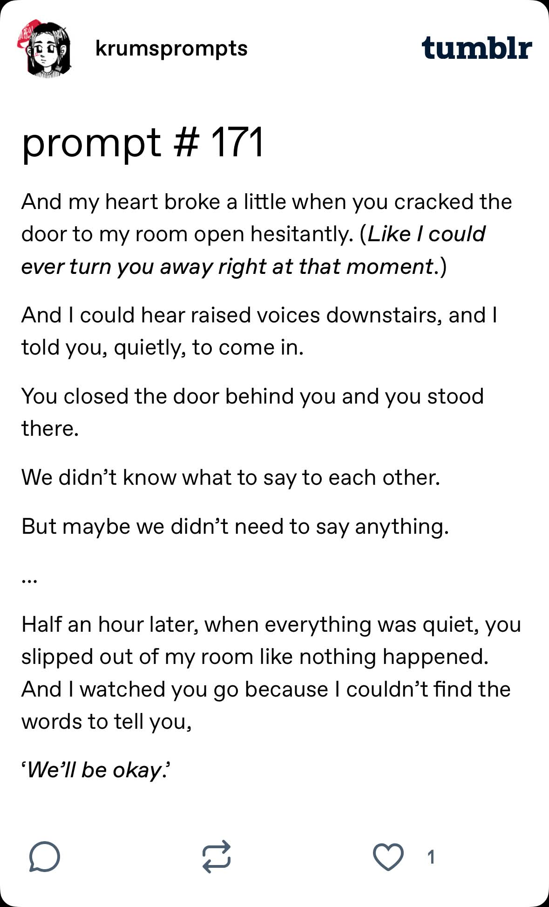
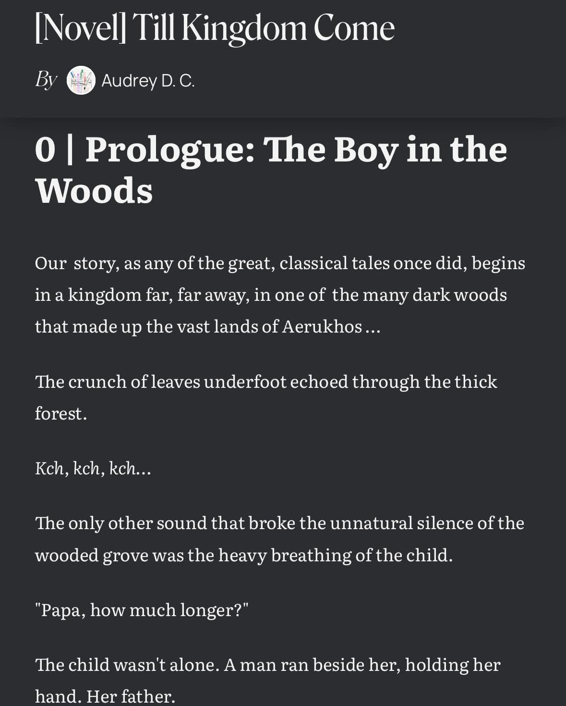

Hi!! I'm Audrey Dylan L. Capili
"Veni, Vidi, Vixi; I came, I saw, I lived."

About Me ٩(ˊᗜˋ )و⊹ ₊ ⁺‧₊˚ ♡
Nice to meet you! My name is Audrey, but I also go by Rey (or my second name, Dylan). I'm currently a full-time 2nd year student in the BA Multimedia Studies undergraduate program at UPOU. I'm a bit of an introvert, but I'm working on just being myself in front of other people without overthinking it. I'm excited to do all sorts of new things next year but my ultimate goal for 2027 is to hopefully build a writing portfolio and land an internship to gain work experience. I'm very excited to learn more in MMS 171: Text in Multimedia, and see how the term helps me improve in aesthetic choices and organizational skills. Cheers to a good term!
˚₊‧꒰ა Things I Love!!໒꒱ ‧₊˚
Hobbies
- Reading (I mostly read creative fiction!)
- Writing (ao3 & tumblr users... stand up!!)
- Drawing
- Doing makeup for fun!!
- Spamming my friends w reels and voice messages
- Movie nights/days!!!
Nouns!!
- Moth Orchids & Stargazer Lilies
- Jellyfish (Fun fact: A group of jellyfish is called a smack!)
- Marshmallows
- Austin Abrams. That man's acting speaks for itself ♥
- Fruit smoothies... anything mango, strawberry, or banana (basic.... I know)
- FROYOOOO!!!!!!
- sinigang > adobo (I'm not sorry •⩊•)
- There's a lot more, but I think I've yapped enough...
gotta maintain some mystery, don't I? (Kidding... mostly!) ☆⌒(≧▽° )
Music
- Author's Note: I'm not picky about what I listen to!! Rock, pop, metal, theatre⸺I love 'em all!
Still getting used to EDM though...
Fav Artists:
- The Killers
- Father of Peace
- Arctic Monkeys
- Olivia Rodrigo
- The Crane Wives
- Lana Del Rey)
- Rage Against The Machine
- etc. :)
Fav Songs n' Albums
- AT NO.1 WE HAVEEE Dakota by Stereophonics
- Hot Fuss. The whole album. No, I will not elaborate...
- Sweet Child O' Mine by Guns N' Roses
- Whatever People Say I Am, That's What I'm Not by Arctic Monkeys
- My Generation by Limp Bizkit
- Cherry Bomb by The Runaways
- Bullet In The Head by RATM (anything by RATM rlly!!!)
Passion Projects

Reykalibrating on IG
Date: March 9, 2026 to Present

Krumsprompts on Tumblr
Date: January 11, 2022 to Present

Till Kingdom Come by Audrey C. [Reykalibrating]
Date: December 2020 to Present